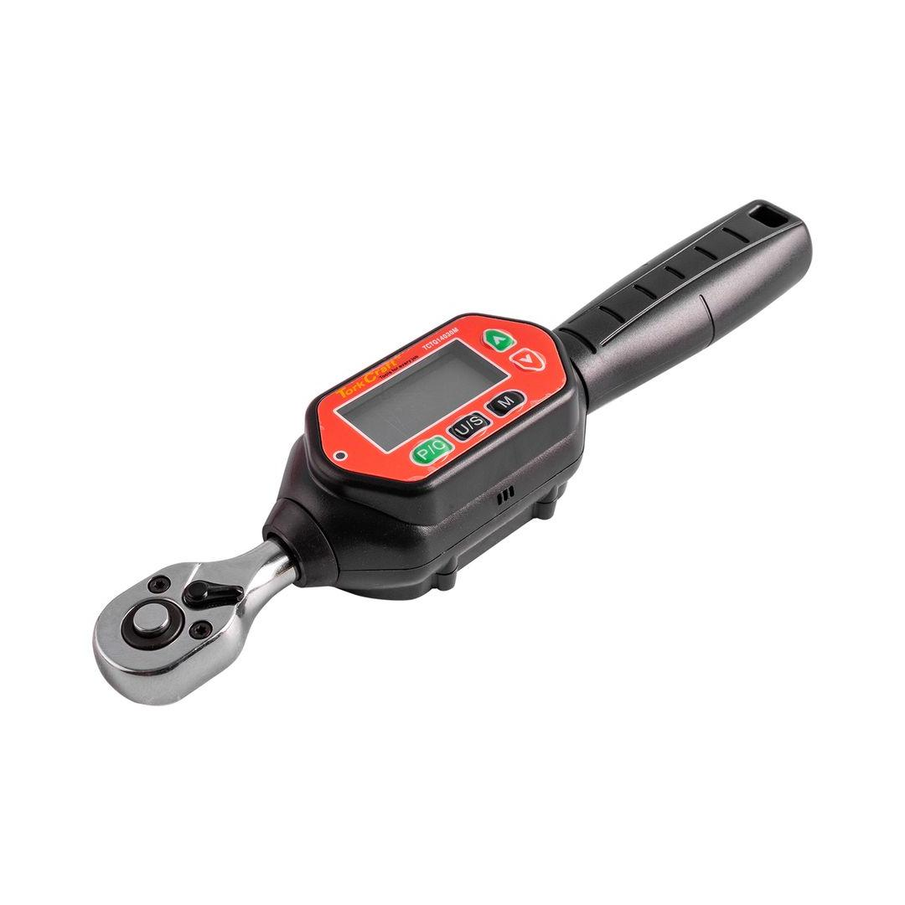
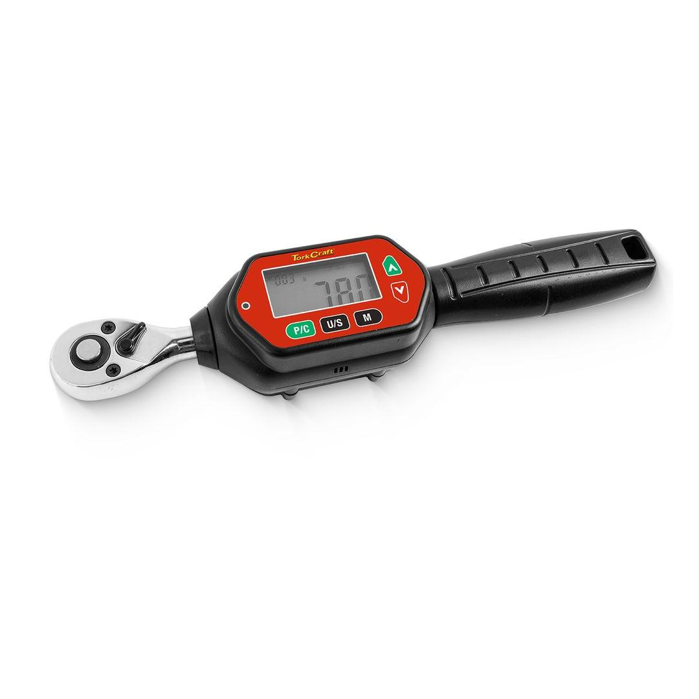

TCTQ14030M


Minimum Torque: 0.9Nm
Maximum Torque: 30Nm
A mini digital torque wrench is a compact, precision instrument used to measure and control the amount of rotational force (torque) applied to a fastener. Unlike traditional click-type torque wrenches, digital models feature a digital display that provides precise readings.